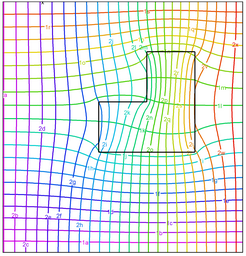

|
fieldmap |

  
|
|
fieldmap |
|
{ FIELDMAP.PDE
This example shows the use of the adjoint equation to display Electric field
lines and to compare these to the vector plot of E.
The problem shows the electrostatic potential and the electric field
in a rectangular domain with an internal region in which the dielectric
constant is five times that of the surrounding material.
The electric field E is -grad(V), where V is the electrostatic potential.
See also DIELECTRIC.PDE
}
title 'Electrostatic Potential and Electric Field'
variables V Q
definitions eps = 1
equations { Potential equation } V: div(eps*grad(V)) = 0 { adjoint equation } Q: div(grad(Q)/eps) = 0
boundaries region 1 start (0,0) value(V) = 0 natural(Q) = tangential(grad(V)) line to (1,0) natural(V) = 0 natural(Q) = tangential(grad(V)) line to (1,1) value(V) = 100 natural(Q) = tangential(grad(V)) line to (0,1) natural(V) = 0 natural(Q) = tangential(grad(V)) line to close |
 |
region 2
eps = 5
start (0.4,0.4)
line to (0.8,0.4) to (0.8,0.8) to (0.6,0.8)
to (0.6,0.6) to (0.4,0.6) to close
monitors
contour(V) as 'Potential'
contour(Q) as 'Field'
plots
grid(x,y)
contour(V) as 'Potential'
contour(Q) as 'Field Lines'
contour(V,Q) as 'Potential and Field Lines'
vector(-dx(V),-dy(V)) as 'Electric Field'
vector(-dx(V),-dy(V)) norm notips as 'Electric Field'
end